Balanced Scene Partitioning
Divides large underwater scenes into spatially coherent and computationally balanced chunks using both SfM point density and camera coverage.
Underwater 3D reconstruction is critical for marine exploration, ecological monitoring, and subsea infrastructure inspection, yet remains challenging at large scale due to light attenuation, scattering, and limited capture coverage. While 3D Gaussian Splatting (3DGS) enables high-quality real-time rendering, its application to large underwater scenes is constrained by high memory consumption and inefficient optimization over extensive areas. We propose OceanXL, a fast and scalable 3DGS-based framework for large-scale underwater reconstruction. OceanXL adopts a divide-and-conquer strategy, partitioning scenes into spatially coherent blocks to enable efficient optimization while preserving global geometric consistency. We further introduce an adaptive pruning scheme tailored to underwater conditions that removes redundant primitives, producing compact representations without sacrificing visual fidelity. Together, these components improve training efficiency and rendering performance for large scenes. We also introduce a large-scale underwater dataset covering diverse marine environments. Experiments on five large-scale scenes demonstrate favorable scalability, compactness, and efficiency–quality trade-offs over large-scene baselines. Controlled comparisons on the small-scale SeaThru-NeRF dataset further show competitive reconstruction quality with substantially smaller model sizes than underwater-specific methods.
OceanXL accelerates large-scale underwater 3D Gaussian Splatting through three complementary components: balanced scene partitioning, underwater-aware densification, and adaptive pruning.
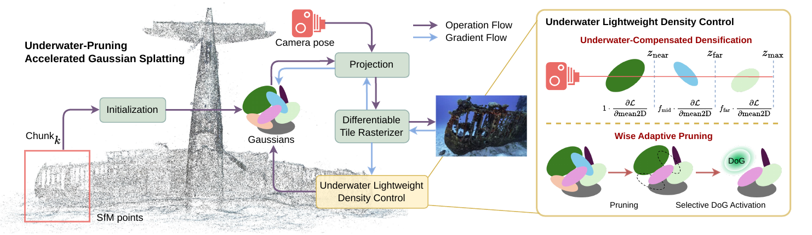
Divides large underwater scenes into spatially coherent and computationally balanced chunks using both SfM point density and camera coverage.
Introduces depth-aware compensation to recover weak positional gradients caused by underwater attenuation, enabling better Gaussian allocation in degraded regions.
Progressively removes redundant Gaussians while preserving fine geometric and appearance details with compact 3D Difference-of-Gaussians components.
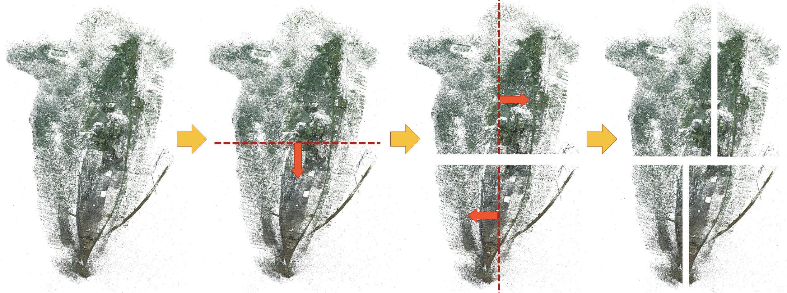
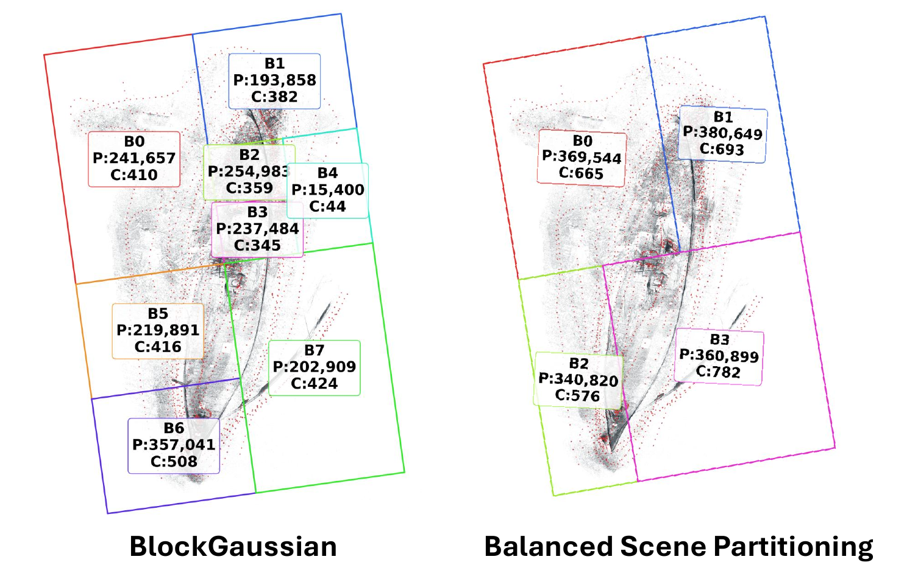
OceanXL adaptively adjusts split boundaries to balance point counts, yielding more uniform chunks and camera distributions than geometric-center partitioning.
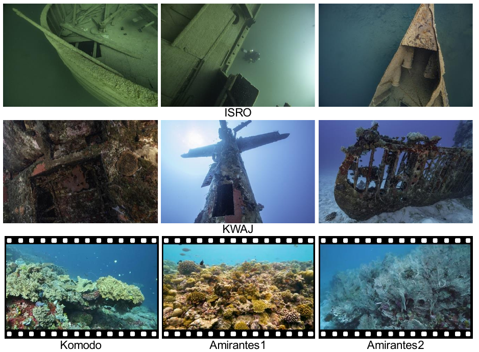
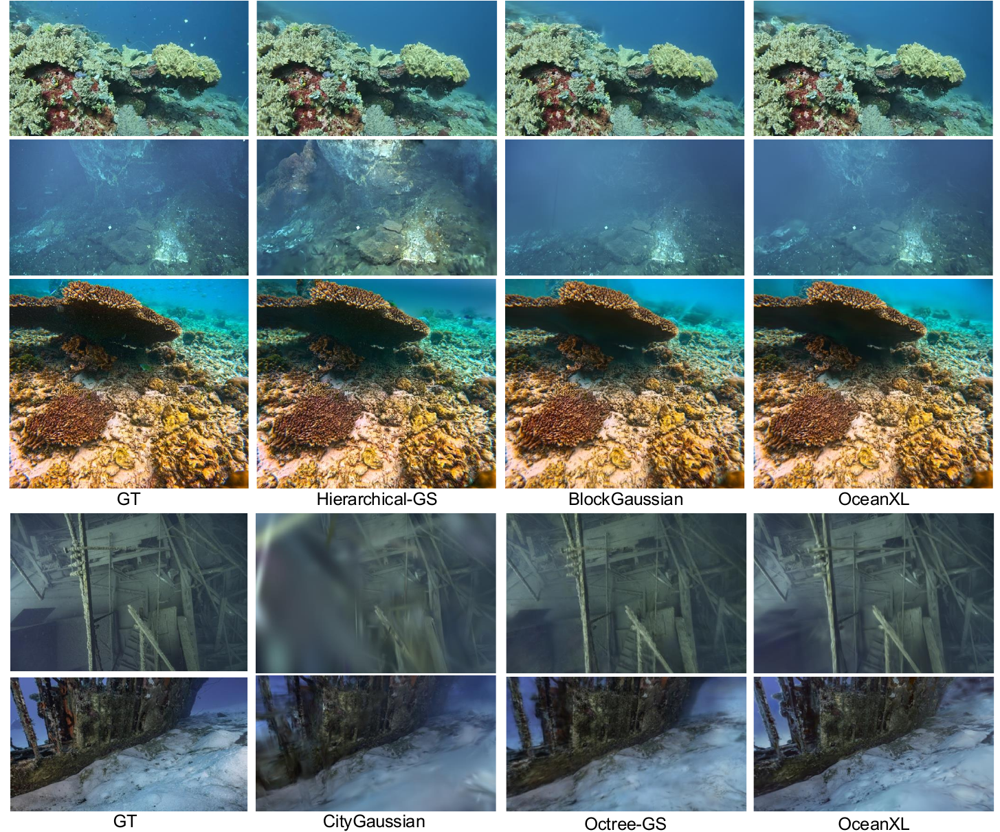
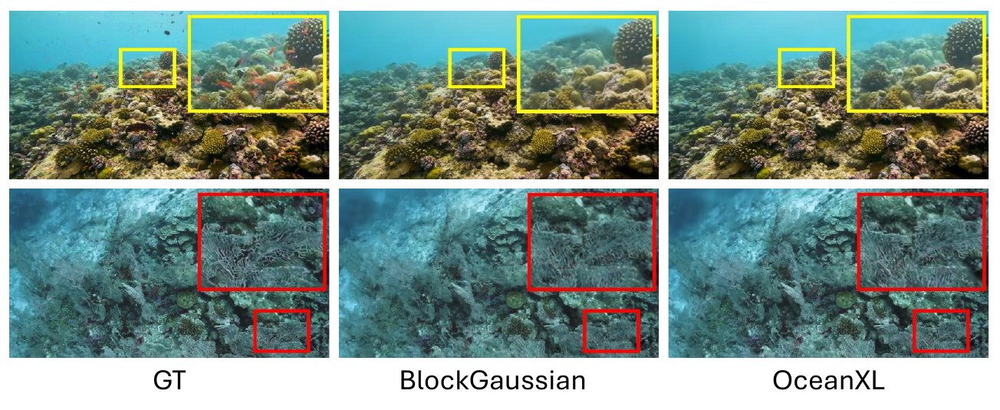
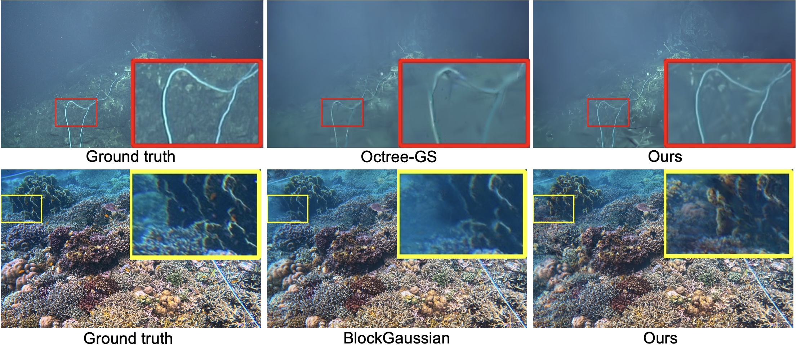
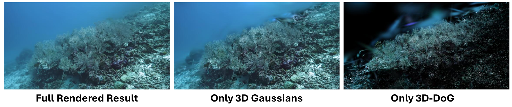
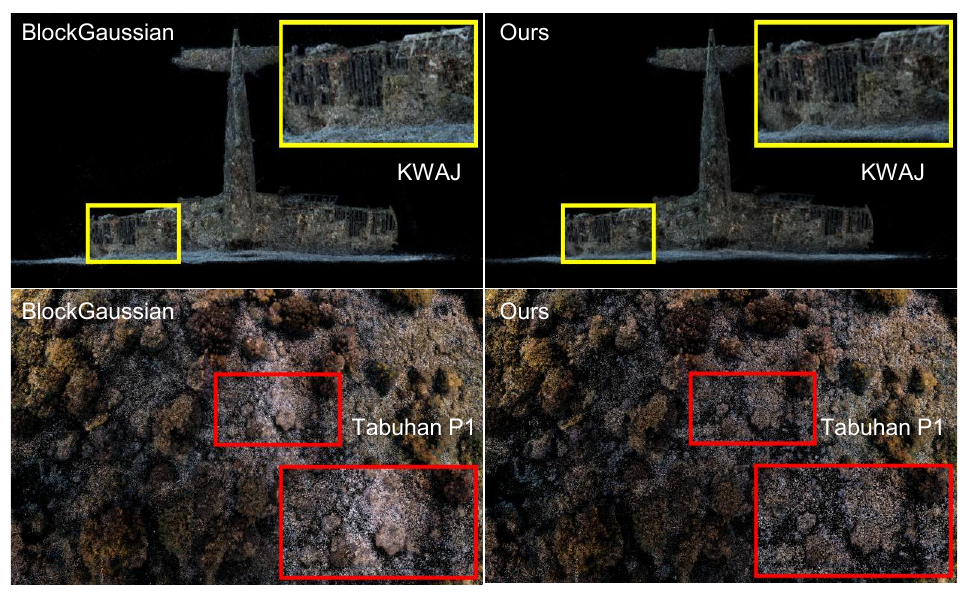
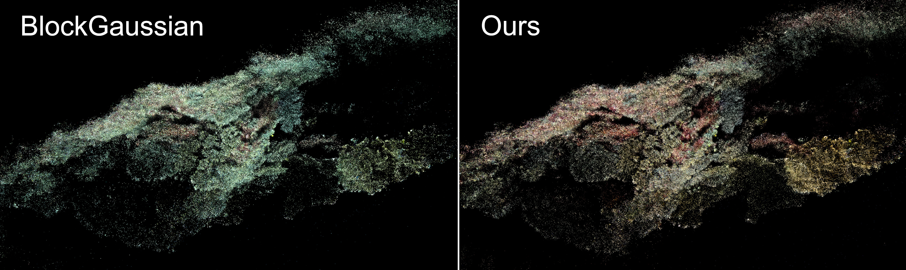
Point-cloud and appearance comparisons illustrate how OceanXL preserves useful scene structure while producing more natural underwater color restoration.
When overlap between nearby views is limited, OceanXL can produce blurrier local renderings. The paper identifies this behavior on KWAJ and notes future directions including uncertainty-aware merging, physics-informed partitioning, and temporal reconstruction.
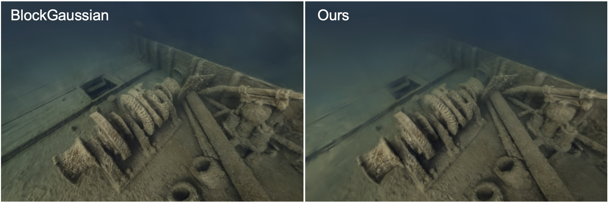
@inproceedings{wang2026oceanxl,
title = {OceanXL: Large-scale Underwater 3D Gaussian Splatting via Block Partitioning and Adaptive Pruning},
author = {Wang, Haoran and Cai, Shaoyu and Azzarelli, Adrian and Jiang, Zhuodong and Huang, Guoxi and Khoo, Eng Tat and Seymour, Brett and Zhang, Fan and Bull, David and Anantrasirichai, Nantheera},
booktitle = {SIGGRAPH Asia 2026 Conference Papers},
year = {2026},
doi = {10.1145/3829340.3842316}
}